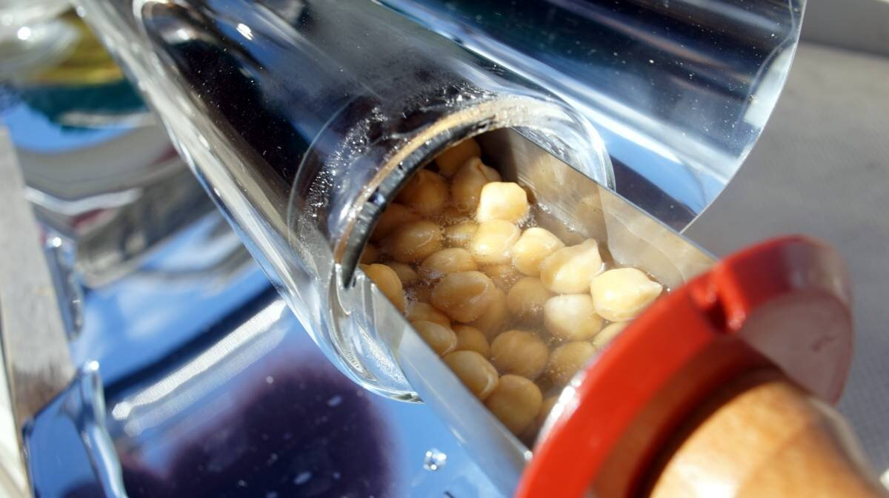
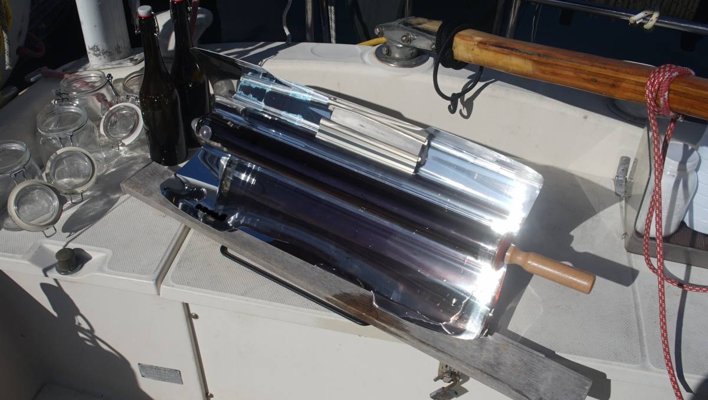
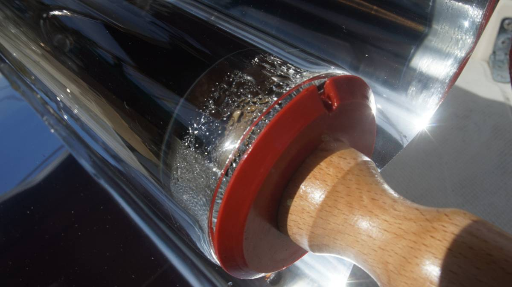
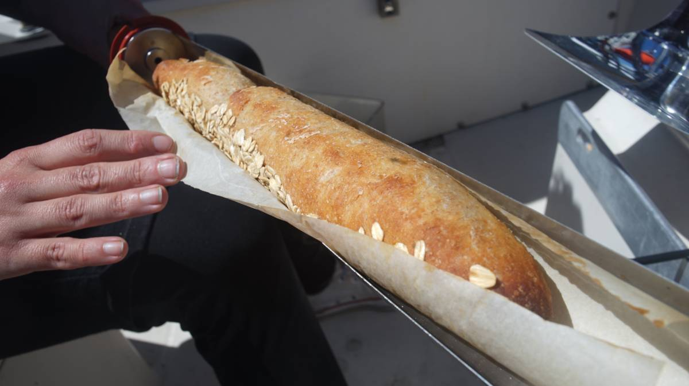

solar evacuated tube cooking
Vacuum tubes are also known as Solar Evacuated Tubes, and Solar Collector Tubes.
What are solar evacuated tubes? They are all-glass double-tube co-axial structures, originally designed for heating water from solar, and typically installed on the rooftops of houses. These tubes can harness the sun's energy to heat bath water, but they can also be useful to heat and cook food.
These tubes are similar to a Dewar flask, which is a double-walled insulating vessel in which the gap between the two flasks that are part of the design are partially evacuated of air, creating a near-vacuum. This near-vacuum significantly reduces heat transfer by conduction or convection.
In short, solar evacuated tubes are like a well-designed thermos, in which heat comes in, and stays in.
The inside of the tube can reach anywhere from 150°C(302°F) to 290°C(550°F), with an overall max temp of 371C(700F). Even when hot on the inside, the outside of the tube remains cold to the touch. Higher temperatures are reachable in high summer, on days of full sun. An overcast summer day will still cook a meal but require more time, but less than a traditional solar oven. These glass tubes are efficient, and because they are it is possible to cook with them on cold, but sunny winter days.
The chamber is so effective, that unlike other solar cooker designs, it often does not require a large reflector to capture sunlight.
Design
- Fast heat generation
- Heat loss is low
- High efficiency in high temperatures
- Suitable performance even in cold condition
- Can be cleaned manually
- Easy to replace glass tube
Like the Dewar flask, the vacuum tubes consist of two borosilicate(think Pyrex) glass tubes, making them more resistant to thermal shock than any other common glass. Such glass is subjected to less thermal stress and can withstand differences(of about 165°C/300°F) in temperature without fracturing.
The vacuum tube is coated with a reflecting layer inside the outer tube to reflect the sunlight to the inner tube. The absorption layer consists of stainless steel and aluminum nitride.
How to cook with a solar evacuated tube?
There are two main ways:
The first is to build a horizontal support bracket, as well as a sort of tray that slides inside of the tube where food can be inserted.
The second, is to get a tube with a bigger diameter that can accommodate something like a mason jar, and to lay the tube vertically and to insert several food-filled jars in from the bottom(never fill jars completely).
See this post by Low Tech Labs on how to build a vertical unit.
A tube that is 5.5cm in diameter and 80cm long with a tray can accomodate up to 1.4kg(3lbs) of food. While a bigger diameter tube (14 cm diameter) can fit larger trays to bake cakes, or lasagnas. Many evacuated tube sizes doesn't allow for large recipes, a 5.5cm diameter tube can only really feed 1-2 people.
Food should not be added directly inside of the glass tube itself, it could stick to it and make it difficult to clean, while increasing the likelihood of fracturing.
Regardless of the way the food is cooked, the process is the same. The food must be added to the tube before it is warm to avoid thermal shock, don't preheat the tube. When the tube is hot, don't add cold food, give it time to cool off first. A tube that has been warmed by a hot sun for a while can take an hour to cool down, even if taken out of the sun. This is useful if the food is cooked in advance and that the goal is to eat it later, if kept in the tube the food will remain warm for a long time.
When building a tray, leave an opening at the end so the tube doesn't pressurize. A pressurized tube could crack.
How vacuum tubes fail
Defects in manufacturing, or accidents can cause a tube to crack. Carrying spare tubes may be smart if living on a boat with plans to travel to far-flung islands.
If a tube is damaged, a barium layer will oxidize and a while film will appear on the inside of the outer tube. It ought to be replaced.
Common causes of tube breakages:
- While cleaning due to using excessive force inside the tube.
- Cracking due to thermal shock (inserting cold food in hot tube, or cleaning hot tube with cold water).
- Dropping the tube, or dropping something onto the tube.
Thermal shock is the most common culprit, it is an easy mistake to make because the outside of the tube will always be cold to the touch.
Where to find vacuum tubes?
When looking for vacuum tubes online, be sure to check the length and inside diameter. There are many designs on the market, but not all are well-suited for solar cooking. The ideal tube has a fair-sized diameter, and isn't too long. If the goal is to sterilize or cook in jars, make sure the diameter can accomodate a standard jar.
- Ideal length: 50 - 80 cm max(19"-31" max).
- Ideal inner diameter: 5.5 - 14 cm max (17-44" diameter).
Group-buys
Tubes are often sold in packs of 10 or more. Organizing a group buy for yourself and friends is a good and money-saving route (this is what Du Soleil Dans Nos Assiettes does).
Here are some of the sources of solar evacuated tubes we found(so far:)
- Du Soleil Dans Nos Assiettes(FR)
- Hi-min(CN)
- AliExpress
- GoSun(US)(replacement tubes)
- SlickSolarStoves(UK)
Many companies design products using these tubes. They don't produce the tubes themselves(aside from Hi-min), but will often sell them with reflectors, and other cooking accessories. Evidently, buying a pre-made product is more expensive, but if you don't have the time/means of fabricating reflectors, it is still worth considering, especially if the goal is to use less fuel.
If you need inspiration to build a holder for your solar tube, see this amazing tutorial(FR) by David Mercereau.
See our first summer solar cooking experiment.
Cooking times
The smaller the food is cut, the quicker it will cook. Full potatoes will cook more slowly than diced potatoes, say. If cooking bread(or anything that expands significantly while cooking), use parchment paper around the bread so that the expanding dough does not stick to the inner glass tube, if the dough sticks the bread may remain stuck in the tube. On that note, any food that 'curls' in cooking can also obstruct the tube, and care should be taken.
For dryer foods, leave more opening at the end of the tube so the steam can escape.
Potatoes.
Sunny: 55 min
Clear: 50-75min
Cloudy: 75-95 min
Overcast: 95 and up.
Pastries(bread, cookies, cakes).
Sunny: 50 min
Clear: 50-65 min
Cloudy: 65-85 min
Overcast: 85 and up.
Grains(corn, beans).
Sunny: 35 min
Clear: 35-55 min
Cloudy: 55-70 min
Overcast: 70 and up.
Vegetables.
Sunny: 30 min
Clear: 30-50 min
Cloudy: 50-65 min
Overcast: 65 and up.
Fruits.
Sunny: 20 min
Clear: 20-35 min
Cloudy: 35-60 min
Overcast: 60 and up.
Data source: Hi-min solar cooker. To see the results of our tests see our solar cooking experiment.
Resources
- Tube de sterilisation solaire(FR, with EN translation).
- Cuisson au tube solaire by NVHD (FR).
- Du Soleil Dans Nos Assiettes(FR, with EN translation).